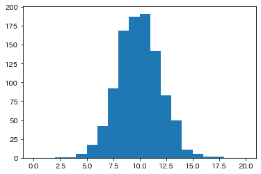
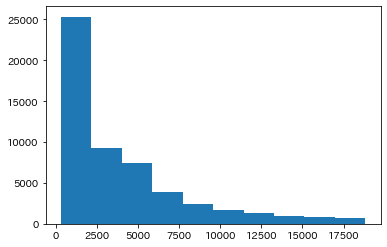
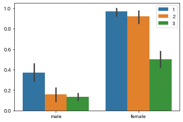
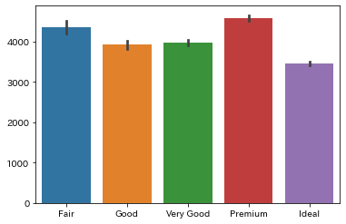
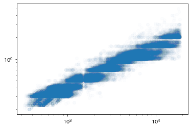
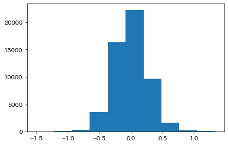
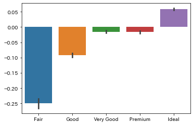

第14回 データの読み方
Contents
第14回 データの読み方#

この章で学ぶこと#
準備中
準備#
[1]:
import matplotlib.pyplot as plt
import numpy as np
import pandas as pd
import seaborn as sns
from sklearn.linear_model import LinearRegression
import japanize_matplotlib
import ssl ## Google Colab上では不要
ssl._create_default_https_context = ssl._create_unverified_context
[2]:
sample_data = np.random.normal(
loc = 10, # 平均
scale = 2, # 標準偏差
size = 1000, # 配列のサイズ
)
[3]:
df_titanic = sns.load_dataset('titanic')
df_diamond = sns.load_dataset('diamonds')
データの分布と代表値#
[4]:
# プロットの入れ物の用意
fig, ax = plt.subplots()
# データの用意
x = sample_data
# ヒストグラムのプロット
ax.hist(x, bins=20, range=(0, 20))
# 表示
plt.show()

[ ]:
データの種類#
[5]:
# プロットの入れ物の用意
fig, ax = plt.subplots()
# データの用意
x = df_diamond["price"].values
# ヒストグラムのプロット
ax.hist(x)
# 表示
plt.show()

[ ]:
層別分析#
[6]:
# プロットの入れ物の用意
fig, ax = plt.subplots()
# データの用意
x = df_titanic["sex"].values
y = df_titanic["survived"].values
hue = df_titanic["pclass"].values
# 棒グラフのプロット
sns.barplot(x=x, y=y, hue=hue, hue_order=[1, 2, 3], ax=ax)
# 表示
plt.show()

[ ]:
発展: 相関と因果#
[7]:
# プロットの入れ物の用意
fig, ax = plt.subplots()
# データの用意
x = df_diamond["cut"].values
y = df_diamond["price"].values
# 棒グラフのプロット
sns.barplot(x=x, y=y, order=["Fair", "Good", "Very Good", "Premium", "Ideal"], ax=ax)
# 表示
plt.show()

[8]:
# プロットの入れ物の用意
fig, ax = plt.subplots()
# データの用意
x = df_diamond["price"]
y = df_diamond["carat"]
# 散布図
ax.scatter(x, y, alpha=0.01)
# 軸の設定（対数スケール）
ax.set_xscale('log')
ax.set_yscale('log')
# 表示
plt.show()

[9]:
df_diamond["price_log"] = np.log(df_diamond["price"])
df_diamond["carat_log"] = np.log(df_diamond["carat"])
[10]:
# データの用意
x = df_diamond[["carat_log"]].values
y = df_diamond["price_log"].values
# 線型回帰モデルの用意
lr = LinearRegression()
# モデルのパラメータのフィッティング
lr.fit(x, y)
# 予測の残差
df_diamond["residual"] = y - lr.predict(x)
[11]:
# プロットの入れ物の用意
fig, ax = plt.subplots()
# データの用意
x = df_diamond["residual"].values
# ヒストグラムのプロット
ax.hist(x)
# 表示
plt.show()

[12]:
# プロットの入れ物の用意
fig, ax = plt.subplots()
# データの用意
x = df_diamond["cut"].values
y = df_diamond["residual"].values
# 棒グラフのプロット
sns.barplot(x=x, y=y, order=["Fair", "Good", "Very Good", "Premium", "Ideal"])
# 表示
plt.show()

[ ]: